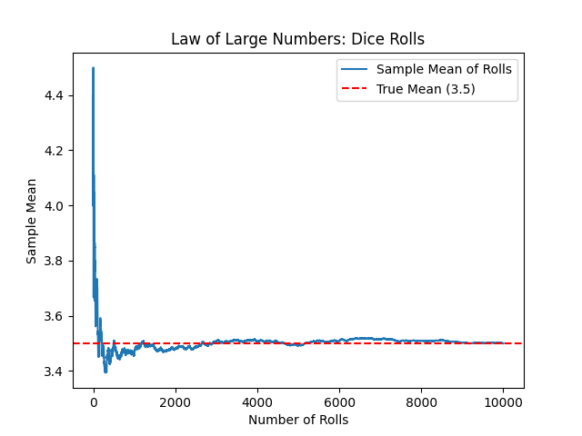

Section1.8Law of Large Numbers and Central Limit Theorem
The Law of Large Numbers (LLN) is often hand-waved as “averages go to the mean,” but there are really two distinct theorems (weak vs strong), different modes of convergence, and subtle conditions. Similary, the Central Limit Theorem (CLT) is one of the deepest ideas in probability, and it’s often glossed over as “averages look normal.”
Let’s take a slow, detailed walk through them. Although I do not intend our treatment here to be exhaustive, but there will be enough detail for you to get a fuller understanding of what they represent and how to use them.
The set up for both LLN and CLT is the same. Suppose you have a number of independent random variables \(X_1, X_2, \cdots, X_n\text{,}\) all with identical distribution functions \(P(X)\text{,}\) same for every \(X_i\text{.}\) Let \(\mu\) be the man and \(\sigma^2\) the variance of the common distribution.
\begin{align}
\amp \mu = \langle X_i\rangle,\qquad \text{same for every }X_i \tag{1.8.1}\\
\amp \sigma^2 = \langle X_i^2\rangle - \mu^2,\qquad \text{same for every }X_i \tag{1.8.2}
\end{align}
We will call these values true mean and true variance. Now, we introduce a new random variable, called the sample mean by
The bar over \(X\) just distinguishes it from the \(n^\text{th}\, X\) in the collection of random variables. More importantly, \(\bar{X}_n\) is not one number, but a random variable, which will take values in the range given by the components \(X_i\text{.}\) For instance, if \(X_i \in \{ 0, 1 \}\text{,}\) a Bernoulli random variable, then, \(\bar{X}_n\) would actually take many values, here \(\bar{X}_n \in \{ 0, 1/n, 2/n, \cdots, (n-1)/n, 1\}\text{.}\)
The random variable \(\bar{X}_n\) will have it’s own probability distribution, \(P(\bar{X}_n)\text{.}\) We call the mean and variance of this dstribution sample mean and sample variance.
The LLN addresses the question: What can we say about the mean of the sample mean \(\bar{X}_n\) as \(n\) grows large? Clearly, the probability distribution of \(\bar{X}_n\) varies if we change \(n\text{.}\)
The weak law of LLN asserts that probablity that \(|\bar{X}_n - \mu|\text{,}\) where \(\mu\) is the true mean defined above in Eq. (1.8.1), can be made smaller than any positive real number as long s you go sufficiently large \(n\text{.}\) Mathematically, we express it as the complement of this probility.
That is, the probability that \(\bar{X}_n\) strays outside of \(\mu \pm \epsilon\) goes to zero as \(\text{}\). This result is also expressed in a more compact notation, with a letter \(P\) above arrow implying “in probability”.
The stron LLN uses a different criteria. You look at the sequency of sample random variables \(\bar{X}_n\) with increasing value of \(n\) and ask if these random variables themselves ted to \(\mu\text{.}\) The claim is
Suppose you flip the coin 10 times, now you have 10 variables, since outcome of each flip is a random variable in its own right. We usually, think of the tosses same experiment done 10 times. With this, \(n = 10\text{.}\) Suppose, you got \((1,1,0,0, 1, 1, 1, 1, 0, 1)\text{.}\) That would mean, for this experiment, you got the following value of the sample mean, \(\bar{X}_{10} = 0.7\text{.}\)
The Central Limit Theorem says that regardless of the distribution \(P(X_i)\) of \(X_i\)’s, which may be Bernouli, Binomial, Exponential, or whatever, the distribution of a \(\bar{X}_n\) tends towards a bell-shaped Gaussian wil larger and larger values of \(n\text{.}\) Specifically,
where \(d\) above arrow just indicates the result “in distribution” and \(\sigma^2\) is the true variance of the component \(X_i\) variables. The convergence in distribution simly means that the CDF of the random variables on the left, i.e., \(\sqrt{n}\left( \bar{X}_n - \mu\right)\) converge to the Gaussian CDF, although it is written as \(\mathcal{N}\) in these equations.
To emphasize the fact that this happens regarless of the original distribution of \(X_i\)’s. This is why we see Gaussian curves everywhere in nature — measurement errors, heights, test scores, etc. aren’t inherently normal, but they are aggregates of many small random effects.
How large is \(n\) when we say n large? A rule of thumb is that often \(n \ge 30 \) is enough. Why? \(1/\sqrt{30} = 5.5\) and when \(\sigma = 1\text{,}\) then probability of deviation from true \(\mu\) larger than this value is about \(1\times 10^{-7}\text{,}\) which can be safely ignored in most cases. There is actually a mathematical result that quantifies the rate of convergence. Berry-Esseen Theorem gives rates of convergence.
Let \(Y_1, Y_2, \cdots, Y_n\) be i.i.d. (independent identically distributed) random variables as above. But, we now have subtracted away the true mean so that these have zero true mean. We state the conditions on \(Y_1\) since all others are same.
and let us denote the CDF of standard normal, \(\mathcal{N}(0,1)\) by the Greek letter, \(\Phi\text{.}\) This is a standard notation. We keep \(F\) for other distributions. Then, Berry-Essen Theorem states that
where \(C\) is a universal constant, independent of the distribution of the \(Y_i\)’s, so that the result holds for all i.i.d. variables satisfying the conditions above. Shevtsova (2011) showed \(C \le 0.4748\) and the best known lower bound is \(C \ge 0.4097\text{.}\) IExact value is not that important since in most applications \(C \approx 1\) is enough.
The CLT says that as \(n \rightarrow \infty\text{,}\)\(F_n \rightarrow \Phi\text{,}\) and Berry-Esseen theorem tells us the rate at which this approach occurs. It says that the difference shrinks as \(1/\sqrt{n}\) with a "tail-heaviness" factor \(\rho/\sigma^3\text{.}\)
In statistics, we distinguish between a sample mean and a population mean. The population mean, also called true mean \(\mu\text{,}\) is usually not known since we either do not have access to every point of interest, we only look at a small part. For instance, when we poll the population on some issue, we do not ask everybody, we just take sample. The LLN gives us confidence that if \(n\) is large enough, sample mean will be close to the population mean.
As a numerical illustration of how sample mean “hugs” the true mean as \(n\) gets large, consider rolls of a fair six-sided die, whose faces are labeled \(1, 2, 3, 4, 5, 6\text{.}\) The true mean of these rolls will be just
Can you see how this can be shown? Anyway, let’s roll this die \(n\) times and plot the sample means of the results obtained in rolls for various \(n\) values. This is shown in Figure 1.8.1. You can see that As the number of rolls increases, the sample mean stabilizes around \(3.5\)

Figure1.8.1.Illustration of the Law of Large Numbers with rolls of a fair six-sided die.
In Supervised Machine Learning we want to find the function \(f\) of the independent variables, called “features”, that minimizes the expected loss \(L\) which is a function of \(f\) and independent variable, also called “target” \(Y\text{.}\)
Now, the “true minimum” is not possible. The only thing we have are \((x,y)\) pairs of values in each trial, i.e., each data point. Say you have \(n\) data points. So, we build the expectation on the right based on these \(n\) data points and get “an approximation” of \(R(f)\text{,}\) which we can designate as \(R_n(f)\text{.}\)
Maybe an example from Physics as well: In statistical mechanics, we often can’t observe all particles in a macroscopic system. Instead, suppose we observe one particle over a long time. LLN guarantees that if the system is ergodic, the time average converges to the ensemble (population) average.